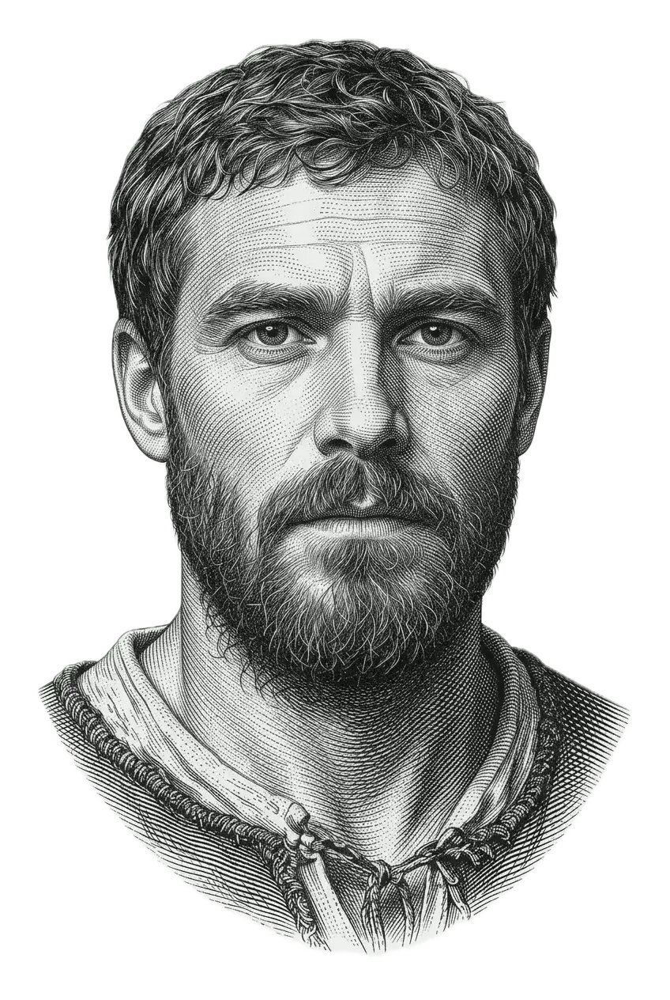
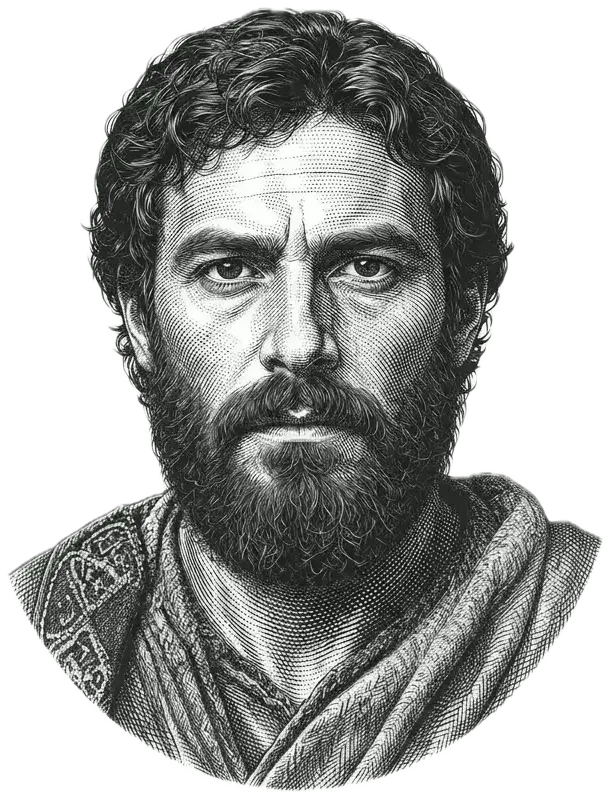
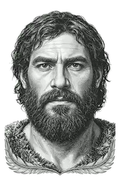
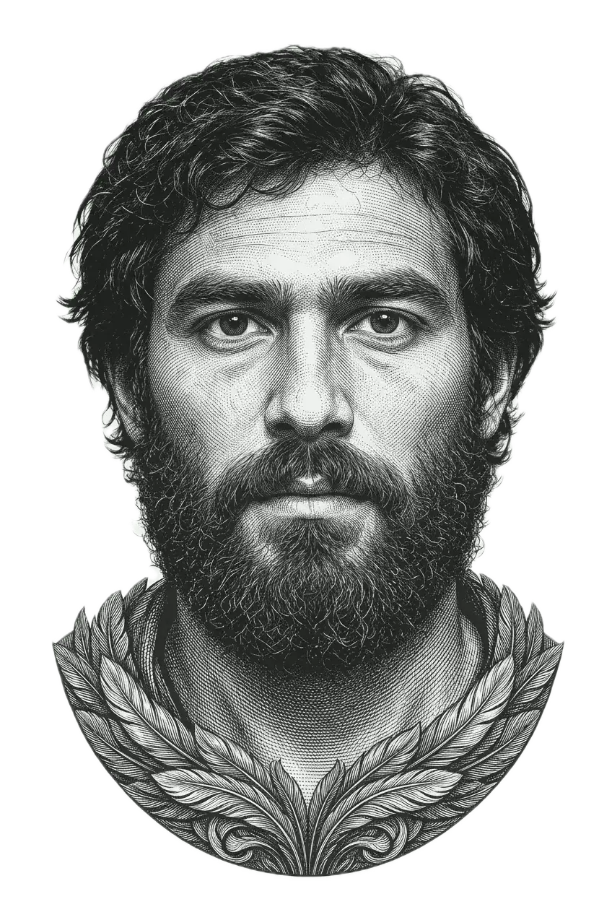
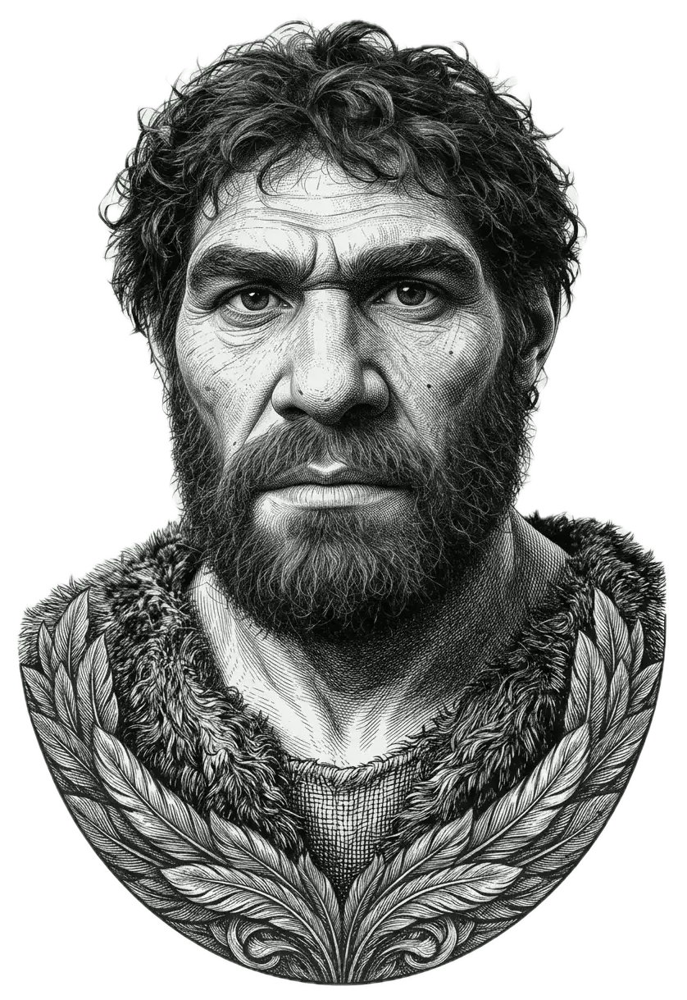

ミンコのDNA検査の結果は、パーセンテージと国名のきれいな一覧として返ってきました。その一覧の下には、はるかに古い物語が眠っています。このレポートはそれを発掘していきます——彼より前に生きた人々を一層ずつ掘り下げ、5万年前の狩猟民にたどり着くまで。
下の地図は発掘の全体を一度に示します。表層が現在、いちばん下が最も深い過去です。地図のあとに七つの層が続きます。各層はまず短い物語から始まり、その下に、確かめたい人のための証拠が置かれています。
深層祖先記録
一つのゲノムの考古学的発掘
東バルカン半島 · 黒海の草原 · トルコ · 5万年の歴史
 ミンコ
ミンコミンコのDNA検査の結果は、パーセンテージと国名のきれいな一覧として返ってきました。その一覧の下には、はるかに古い物語が眠っています。このレポートはそれを発掘していきます——彼より前に生きた人々を一層ずつ掘り下げ、5万年前の狩猟民にたどり着くまで。
下の地図は発掘の全体を一度に示します。表層が現在、いちばん下が最も深い過去です。地図のあとに七つの層が続きます。各層はまず短い物語から始まり、その下に、確かめたい人のための証拠が置かれています。
このプロファイルの解釈に使用した集団および古代の参照サンプル。
上＝現在、下＝最も深い過去。 色付きの列はこのレポートの語りの順序であり、暦上の正確な開始・終了年ではありません。 WHG、EHG、CHGが時間的に重なる部分では、主要な列は一つの中立的な区間として示し、それぞれの本来の期間は横の細い帯に示しています。

スラブ系
トラキア系
ヤムナヤ系 EHG
EHG
CHG WHG
WHG
ネアンデルタール系発掘
以下、七つの層が続きます。一層ごとに、より深くなっていきます。まずは発掘全体を一度に見渡しましょう。
現在生きている人々と比べると、ミンコのDNAはルーマニア人（0.018）とブルガリア人（0.021）にいちばん近く、そのすぐ後にガガウズ人、モンテネグロ人、モルドバ人、セルビア人、マケドニア人が続きます。これは一つの国ではなく一帯の「地域」であり、ミンコのDNAはその中ほどに位置しています。MyHeritageのラベル（ギリシャ・アルバニア系約47%、バルカン系約38%）は、同じ南東ヨーロッパの遺伝子プールを二つの窓から見たものであり、別々の祖先ではありません。
古代の人骨のなかで最も近いのは、中世マケドニア（0.030）と中世ブルガリア（0.034）のものです。これは、スラブ語を話す新参者が、すでにバルカンに住んでいた人々と混ざり合った時代にあたります。2023年の古代DNA研究は、スラブ系の祖先が現在のバルカンの人々の約30〜60%を占めると推定しており、中世バルカン型のプロフィールは歴史から予想されるとおりです。
中世の層より下では、モデルはゲノムを二つの大きな成分の混合として読み取ります。黒海の北にいた草原の牧畜民（約52〜56%）と、アナトリアの初期農耕民（約42〜46%）です。中石器時代ヨーロッパの狩猟採集民は、単独では約2%しか現れませんが、その祖先の一部は草原系の割合のなかに入り込んでいます。草原系の人々はバルカンに着く前に、すでに狩猟民を取り込んでいたからです。
生のデータファイルも、ヨーロッパ型の姿を裏づけています。SLC24A5とSLC45A2のどちらでも、肌を明るくする変異を2コピーずつ持ち、青い目に最も強く関連するHERC2の変異を2コピー、乳糖持続性の変異を1コピー持っています。調べた東アジア関連のマーカー（EDAR、ABCC11、ALDH2、OCA2）は、すべて祖先型で、東アジア系祖先をうかがわせるものはありません。
| 最も近い一致 | 距離 | |
|---|---|---|
| 現代集団 | ルーマニア人（次はブルガリア人0.021） | 0.018 |
| 中世 | マケドニア／ブルガリア中世 | 0.030 / 0.034 |
| 草原の牧畜民 | ブルガリアのヤムナヤ関連／サマラ・ヤムナヤ | 0.123 / 0.176 |
| 初期農耕民 | ボンジュクル／バルチン（アナトリア） | 0.142 / 0.171 |
| 深層の狩猟採集民 | コーカサス（コティアス）対 北方（カレリア） | 0.253 / 0.286 |
検査はこう告げます——ギリシャ・アルバニア系47%、バルカン系38%、東ヨーロッパ系9%、南イタリア系5%。ですがこれは、ミンコにギリシャ人の祖母やイタリア人の曽祖父がいるという意味ではありません。検査は、DNAを現在生きている人々と比べ、誰に似ているかを報告しているだけです。「ギリシャ・アルバニア系」とは、実際には「古い地中海の農耕の遺産を受け継ぐ人々に似ている」という意味で、その遺産は南東ヨーロッパのほぼ全員が共有しています。
同じDNAを別の検査にかければ、ラベルは変わります。DNAは変わりません。ですからラベルはいったん脇に置き、発掘を始めます。
確か
発掘
どの発掘も表層から始まります。ここでの表層とは、標準的なDNA検査が返す民族推定であり、レポート全体のなかで最も当てにならない部分です。
このキットに対するMyHeritageの民族推定：
| ギリシャ・アルバニア系 | 46.8% |
| バルカン系（ボスニア・ヘルツェゴビナ） | 38.4% |
| 東ヨーロッパ系 | 8.8% |
| 南イタリア系 | 4.9% |
| バルト系 | 1.1% |
MyHeritageはさらに、確信度の低い追加の遺伝的グループを3つ示しています——主な内訳に収まりきらない、より細かなシグナルです：ブルガリア、ルーマニア、ボスニア・ヘルツェゴビナ。
これらのパーセンテージは、家系図が示すような祖先の割合ではありません。DNAを現代の参照集団と比べ、どの現存グループに最も似ているかを問うアルゴリズムから出てきた数字です。別のアルゴリズムと別の参照パネルを使えば、別の数字になります。このレポートの他の計算ツールが示すとおりです。大事なのは、そのすべてを通じて何が変わらないかです。五つのラベルは次のように読みます：
ギリシャ・アルバニア系（46.8%）は、ギリシャ人やアルバニア人の祖父母がいるという意味ではありません。プロフィールの約半分が、これらの現代集団に似ているということです。両集団は、古代のトラキア人、ダキア人、イリュリア人の下にもあった、古いエーゲ海・アナトリアの農耕の遺産を多く保っています。ギリシャ人とアルバニア人はスラブ時代のシグナルが相対的に少ないため、アルゴリズムは彼らを、より古いバルカンの層に最も近い代役として使っています。
バルカン系（38.4%）は、スラブ時代の祖先と地元バルカンの祖先をまとめて見るアルゴリズムの窓です。6世紀以前からバルカンに住んでいた人々と、その後にやって来た移住者が含まれます。
東ヨーロッパ系（8.8%）は、北にいるスラブ語系・バルト地域の集団と共有する祖先で、中世初期の移住が南へ運んだものです。独立した「東ヨーロッパ人の祖先」がいるわけではありません。
南イタリア系（4.9%）は、家系図の意味でのイタリア人祖先ではありません。南イタリア人とバルカンのギリシャ人は、どちらもアナトリアの農耕民に、のちの東地中海の祖先を加えた構成であり、この割合は同じ農耕のシグナルが別のラベルをつけているにすぎません。
バルト系（1.1%）とMyHeritageが示す追加グループは、連続体の中心にあるゲノムが、すべての隣人に同時に似ているとき、アルゴリズムが報告するものです。
現在生きている人々と並べると、ミンコのDNAにいちばん近いのはルーマニア人、次にブルガリア人で、そのあとにガガウズ人（南モルドバとその周辺に住む、テュルク語を話す主に正教徒の人々）、モンテネグロ人、モルドバ人、セルビア人、マケドニア人が続きます。一つの国ではなく一帯の地域であり、ミンコのDNAはその中ほどにあります。
携帯電話の位置を複数の基地局から割り出すのに似ています。七つの基地局が同じ場所を指せば、その場所は信用できます。ルーマニア人がブルガリア人をわずかに上回ったからといって、ミンコが「よりルーマニア人」ということにはなりません。二つの近い従兄弟のような民族のほぼ真ん中にいる、ということです。
確か
発掘
ミンコの座標は、Global25の枠組みで現代集団の平均値と比較されました。最も近いのはルーマニア人の0.018で、次にブルガリア人が0.021、ガガウズ人が0.024、モンテネグロ人とモルドバ人が0.025、セルビア人とマケドニア人が0.026です。ギリシャ中央マケドニア（0.040）とアルバニア人（0.042）は、はっきりと遠くなります。
ルーマニア人とブルガリア人の差は座標の不確かさより小さいため、安全な読み方は、順位づけではなく二つのあいだの位置です。全体としては東バルカンの密なクラスターがエーゲ海に向かってゆるんでいく形で、バルカンのギリシャ・アルバニア側よりもやや北に傾いたプロフィールと合っています。
| 現代集団 | G25距離 | |
|---|---|---|
| ルーマニア人 | 0.018 | |
| ブルガリア人 | 0.021 | |
| ガガウズ人 | 0.024 | |
| モンテネグロ人 | 0.025 | |
| モルドバ人 | 0.025 | |
| セルビア人 | 0.026 | |
| マケドニア人 | 0.026 | |
| ギリシャ中央マケドニア | 0.040 | |
| アルバニア人 | 0.042 |
| 東バルカン | 14.55% |
| イタリア系 | 10.46% |
| 東地中海 | 9.68% |
| フェノスカンジア | 8.80% |
| 東中央ヨーロッパ | 8.55% |
| 中央ヨーロッパ | 7.72% |
| イベリア | 7.23% |
| 北大西洋 | 5.45% |
| 北コーカサス | 5.12% |
| アルメニア | 4.86% |
K36が加えること。Eurogenes K36計算ツールは、ゲノムを36の細かな成分に分けます。最大は東バルカンで14.55%です。イタリア系（10.46%）と東地中海（9.68%）は、文字どおりのイタリア人の祖先ではなく、古い地中海の農耕の遺産を合わせて反映しています。フェノスカンジア（8.80%）は北方の狩猟採集民型の祖先です。北コーカサス（5.12%）とアルメニア（4.86%）は、草原の牧畜民とアナトリアの農耕民の双方が持っていたコーカサス関連のシグナルです。K36はインドシナ系（1.46%）と東中央アジア系（0.18%）という小さな割合も報告しますが、この大きさでは、ヨーロッパ人のゲノムでは計算ツールのノイズの範囲内であり、「祖先SNPマーカー」の層で見る単一遺伝子の確認も同じ方向を指しています。
6世紀から9世紀にかけて、スラブ語を話す家族が南のバルカンへ移り住みました。彼らは誰かに取って代わったわけではありません。そこに住んでいた人々——トラキア人、イリュリア人、ローマ化した属州の人々——に加え、ローマ・ビザンティン支配下でアナトリアから来た入植者と混ざり合い、その混合から中世のブルガリア人が生まれました。古代DNAがその規模を示しています。スラブ系の祖先は、現在のバルカンの人々の約30〜60%を占めます。
ミンコのDNAは、中世のマケドニアとブルガリアの人骨に最も近いものです。アヴァール時代のハンガリーは入り混じった姿です。カルパティア盆地の一般の人々の集団のなかには、ミンコとまったく同じくらい近いものがある一方、東アジア系の草原祖先を持つグループ——とくに支配層の墓——は遠く離れています。ミンコのDNAが映しているのは、あの世界のヨーロッパ型の人々であり、隣の平原を治めていた草原の貴族層ではありません。
混合の割合を推測するなら、おおよそ3分の1がスラブ系、約半分がより古いバルカンの人々、5分の1がローマ・ビザンティン時代のアナトリアからの新参者です。これらの割合は測定値ではなく、推測として受け止めてください。
物語はほぼ確実。割合はおおまかな推測
発掘
現代集団の地図は、ゲノムが今どこにあるかを示します。その位置がどう形づくられたかを見るため、発掘は現代の層を取り除き、中世まで掘り下げます。
コンセンサス座標に対して、最も近い中世の参照集団はマケドニア中世（0.030）とブルガリア中世（0.034）です。どちらも東バルカンの墓から出た実際のゲノムの平均です。0.03前後の距離は、ミンコのモデル化された座標がそれらの平均に非常に近いことを意味します。彼の家族が12世紀のあいだ一つの町に住み続けたことの証明にはなりません。
最もよく合う混合モデル（距離0.0123）は、一貫した物語を語ります。座標の約72%が二つの中世バルカン集団の合計で説明され（マケドニア中世37.8%、ブルガリア中世34.0%）、残りはセルビアの中期青銅器時代（16.4%）、ハンガリー後期アヴァール（6.6%）、ブルガリアのヤムナヤ関連祖先（4.2%）、新石器時代アナトリア（1.0%）という小さな割合です。混合モデルは一つに定まるものではなく、ほかのレシピもほぼ同程度に合いますが、このモデルは距離と同じ方向を指しています。
| 中世集団 | 距離 | |
|---|---|---|
| マケドニア中世 | 0.030 | |
| ブルガリア中世 | 0.034 | |
| ロシア・ヴァイキングSG | 0.076 | |
| ロシア・ヴァイキングoSG | 0.097 | |
| ハンガリー後期アヴァール | 0.122 | |
| セルビア中世ゲピド人 | 0.136 | |
| ハンガリー初期アヴァール | 0.214 | |
| ハンガリー後期アヴァール・エリート | 0.301 | |
| ハンガリー初期アヴァール・エリート | 0.414 |
表の残りの読み方。次に近いのはロシアのヴァイキング時代の墓（0.076、外れ値の個体は0.097）です。その北ヨーロッパ系の祖先は、スラブ語系の集団が持っていたものと重なっているため、北欧人との接触の証拠ではなく、共有された深い祖先を示しています。
アヴァールの行は、分裂を隠しています。アヴァール・ハン国は567年から、800年前後の数十年で崩壊するまで、カルパティア盆地を支配しました。「ハンガリー後期アヴァール」（0.122）と「ハンガリー初期アヴァール」（0.214）は、まったく異なる人々の平均です。アヴァール時代の個々のグループは、0.025（北ハンガリー山地、後期アヴァール）と0.026（中期アヴァール）——どのバルカンのグループとも同じくらい近い——から、強い東アジア系祖先を持つグループの0.4以上、エリート層の墓（後期0.301、初期0.414）まで幅があります。アヴァールの墓地のDNA研究は、7世紀の支配層がかなりの北東アジア系祖先を持っていたことを示しました。ミンコのDNAにはその支配層のシグナルはありませんが、カルパティア盆地のヨーロッパ型の集団はとてもよく合います。
スラブ語を話す新参者がどこから来たかは、どうやってバルカンにたどり着いたかよりも、よく分かっています。2025年の古代DNA研究（Gretzinger et al., Nature）は、その祖先を東ヨーロッパ、おそらくベラルーシ南部とウクライナ北部にまたがる地域にたどり、6世紀から8世紀のあいだに西と南へ広がったことを明らかにしました。アヴァール時代のオーストリアでは、同じ祖先がすでに7世紀に現れており（メードリング墓地で約27%）、地元の人々と混ざっていました。研究はまた、スラブ時代の人々のあいだに、カルパティア山脈の北と南にそれぞれ一つずつ、DNAを共有する二つの集団を見いだしており、著者らは、これが二つの異なる拡散の波、あるいは地元集団との混合の度合いの違いを反映しているのかもしれないと述べています。
ブルガリアの入植者が、中央ヨーロッパ系の祖先を拾いながらパンノニア平原を通ったのか、それともカルパティア山脈を迂回してドナウ川下流を渡ったのか——文献史料がスラブ人を最初に位置づけるのはそこです——は、決着していません。二つの経路は、競合するというより、一つの移動の異なる段階だった可能性があります。ドナウ川下流域の6〜8世紀のゲノムは残っておらず、ミンコのDNAが示せるのは最終的な結果であって、道筋ではありません。ここでこの問いが出てくるのは、上で見たアヴァール時代の比較のためです。カルパティア盆地のヨーロッパ型の集団が、中世バルカンと同じくらいミンコに近いという事実は、パンノニア経路とも、ドナウ川下流経路とも、同じように合います。
中世の層の下には、スラブ人が来る前にバルカンに住んでいた人々がいます。トラキア人、ダキア人、イリュリア人の子孫、ローマ帝国の属州の人々、そしてローマ支配下で到来したアナトリアからの入植者です。現代のブルガリア人、ギリシャ人、アルバニア人は、この層をそれぞれ異なる割合で受け継いでおり、その境界をパーセンテージだけからきれいに引くことはできません。
ブルガリアの古代DNAの記録全体（外れ値の個体を含む）との比較は、次のような階段になります：
| ブルガリア古代集団 | 時代・注記 | 距離 | |
|---|---|---|---|
| ブルガリア中世 | 9〜14世紀 | 0.0340 | |
| ブルガリアEBA o2 | 前期青銅器時代 | 0.0397 | |
| ブルガリアEBA oNorth（準備中） | 前期青銅器時代、未発表セット | 0.0483 | |
| ブルガリアEBA oNorth | 前期青銅器時代 | 0.0490 | |
| ブルガリアEBA MBA | 前期〜中期青銅器時代 | 0.0531 | |
| ブルガリアEBAヤムナヤo | 前期青銅器時代ヤムナヤ関連 | 0.0596 | |
| ブルガリア中世oEastAsia | 中世、東アジア混血の外れ値 | 0.0651 | |
| ブルガリアEBA | 前期青銅器時代 | 0.0707 | |
| ブルガリアC oSteppe | 銅器時代、草原混血の外れ値 | 0.0784 | |
| ブルガリアBeliBreyag EBA | 前期青銅器時代（ベリ・ブリャグ） | 0.0866 | |
| ブルガリアIA | 鉄器時代 | 0.0882 | |
| ブルガリアLIA | 後期鉄器時代 | 0.0906 | |
| ブルガリアEIA | 前期鉄器時代 | 0.0959 | |
| ブルガリアMalakPreslavets N | 新石器時代（マラク・プレスラヴェツ） | 0.0985 | |
| ブルガリアMalakPreslavets N oLowEEF | 新石器時代、低農耕民成分の外れ値 | 0.0996 | |
| ブルガリアMLBA | 中期〜後期青銅器時代 | 0.1161 | |
| ブルガリア古代末期 | 4〜7世紀 | 0.1174 | |
| ブルガリア・ヴァルナC | 銅器時代 | 0.1181 | |
| ブルガリアN oEEF | 新石器時代、農耕民プロフィールの外れ値 | 0.1205 | |
| ブルガリアEBAヤムナヤ | 前期青銅器時代ヤムナヤ関連 | 0.1228 | |
| ブルガリアKrepost N | 新石器時代（クレポスト） | 0.1281 | |
| ブルガリアN o | 新石器時代、外れ値 | 0.1337 | |
| ブルガリアC | 銅器時代 | 0.1402 | |
| ブルガリアEBA o1 | 前期青銅器時代、外れ値1 | 0.1511 | |
| ブルガリアN | 新石器時代 | 0.1622 |
階段の読み方。最も近いのは中世ブルガリア（0.034）です。そのあとに、草原系と農耕民系の祖先をすでに併せ持つ前期青銅器時代の試料が密に続きます（0.040〜0.071）。鉄器時代の試料、つまりトラキア時代は0.09〜0.10前後で、農耕民が優勢な新石器・銅器時代の試料が最も遠くなります（おおよそ0.12〜0.16）。
目を引く点が二つあります。一つ目は、古代末期のブルガリア（4〜7世紀、0.117）が、青銅器時代や鉄器時代の試料よりも遠いことです。これは、ローマ時代から中世にかけてバルカンが経験した変化を反映している可能性が高いでしょう。ローマ時代の人口はアナトリア型の祖先を得ており、中世初期の数世紀はスラブ系の北・東方向へのシフトをもたらし、それがミンコのプロフィールへと近づけたのです。二つ目は、東アジア系の祖先が加わった中世ブルガリアの外れ値の個体（0.065）が、典型的な中世グループ（0.034）より明確に遠いことで、ミンコがそのシグナルを強めた形で持っているわけではないことを意味します。
約5000年前、黒海の北に広がる草原の牧畜民——考古学者がヤムナヤと呼ぶ人々——が、荷車と家畜、そして馬とともに西へ広がりました。有力な仮説は、彼らをインド・ヨーロッパ語族の拡散と結びつけています。この語族にはブルガリア語、英語、ヒンディー語が含まれます。
これらのモデルでは、ミンコの祖先の半分強、約52〜56%が草原系です。これは草原系祖先の合計であって、一つの出来事ではありません。ヤムナヤが最初の波を運び、のちの草原の民——スラブ語を話す移住者もその一部——がさらにバルカンへ運びました。同じモデルは初期農耕民を42〜46%と見積もっており、二つはほぼ同等です。
ほぼ確実。割合は方法によって数ポイント動く
発掘
中世のバルカンは、より古い集団から成り立っていました。その下にあるのが、農耕民と草原の牧畜民が出会った青銅器時代の世界です。
三つの大きなヨーロッパの成分を測るため、座標を草原の牧畜民、アナトリアの農耕民、狩猟採集民の参照集団と比較します：
| 古代集団 | 距離 | |
|---|---|---|
| ブルガリア前期青銅器時代ヤムナヤ（草原系、バルカン、約5000年前） | 0.123 | |
| トルコ・ボンジュクル新石器（初期アナトリア農耕民、約1万300年前） | 0.142 | |
| トルコ・バルチン後期新石器（アナトリア農耕民、約8500年前） | 0.171 | |
| ロシア・サマラ前期青銅器時代ヤムナヤ（草原の牧畜民、約5000年前） | 0.176 | |
| ルクセンブルク・ロシュブールWHG（狩猟採集民、約8000年前） | 0.407 |
混合モデルは、これらの距離を割合に変換します。コンセンサス座標では、最もよく合うのは約56%が草原系（ブルガリアのヤムナヤ関連）、42%がアナトリア農耕民（バルチン37.8%＋ボンジュクル4.2%）、2%が西ヨーロッパ狩猟採集民（ロシュブール）です。K36の結果だけを使うと、草原系は約52%（ブルガリアのヤムナヤ関連32.4%＋サマラ・ヤムナヤ19.2%）、農耕民系は約46%（バルチン28.6%＋ボンジュクル17.6%）、狩猟採集民系は約2%になります。
これらは参照集団をもとに組み立てたモデル上の割合であって、家系図を数えたものではありません。草原系の祖先は、数回の波に分かれてバルカンに到達しました。約5000年前のヤムナヤ関連の牧畜民、サルマタイ人のような鉄器時代の草原の民、そして、さらに北から草原由来の祖先を運んだスラブ語系の移動です。モデルはこれらを分けることができません。
ボンジュクル（0.142）はバルチン（0.171）より近い位置にあります。どちらもアナトリアの農耕時代の遺跡ですが、ボンジュクルのほうが古く（約1万300年前、アナトリア中部）、バルチンは約8500年前にヨーロッパへ農耕を運んだ、のちの波に属します。差は小さいため、安全な読み方は単に「アナトリア型の農耕民祖先」であり、この差に余分な深さを読み込むべきではありません。
狩猟採集民の参照集団であるロシュブールは最も遠く（0.407）、狩猟採集民系の祖先は存在するものの、三つの基礎的な流れのなかで最も小さいことを示しています。
もう一つ近い隣人がいます。サマラ草原のサルマタイ時代の試料は約0.138で、ヤムナヤの参照集団より近い位置にあります。サルマタイ人は鉄器時代の遊牧民で、紀元前4世紀ごろからスキタイ人に続いてポントス草原を渡り、ドナウ川沿いやダキアで活動しました。彼らに近いということは、ミンコのプロフィールが、すでに農耕民と混ざっていた、のちの草原由来の集団に似ていることを意味しますが、彼がとくに彼らの子孫であるという意味ではありません。
バーが短いほど、ミンコの座標との遺伝的な類似性が高いことを示します。これらはモデル化された距離であり、祖先の割合ではありません。
牧畜民が来る前に、農耕民がやって来ました。約9000年前から、現在のトルコの家族がギリシャとバルカンを経由してヨーロッパに広がり、小麦、羊、定住の村をもたらしました。彼らは暮らしぶりを変え、ヨーロッパ人の外見も変えました。主要な肌を明るくする変異は、彼らとともに広まりました。ミンコはそれを2コピー持っています。
農耕民はミンコの祖先の約42〜46%を占め、あとから来た牧畜民とほぼ同じ水準です。比較すると、のちの移動をほとんど受けなかったサルデーニャ人は、初期農耕民に由来する祖先を、ほぼ2倍持っています。
ほぼ確実
発掘
青銅器時代の牧畜民が始まりではありませんでした。草原の層の下には、より古いヨーロッパの土台があります。最初の農耕民です。
混合モデルは、初期アナトリア農耕民系祖先を約42%と見積もります（K36のみの座標では約46%）。同様のモデルでは、のちの移動をほとんど受けなかった現代のサルデーニャ人は、農耕民系祖先が約75〜80%になります。東バルカンのプロフィールはそれより低く出ますが、それはスラブ人の移動も含め、草原系祖先がここへ大量に到来したためです。
ヨーロッパで最も古い農耕の村は、約9000年前からのギリシャと南バルカンにあります。バルカンはヨーロッパの農耕の着地点であって、通過点ではなく、東バルカンのゲノムにはこの最初の接触の明確な痕跡が残っています。
これが、MyHeritageの「ギリシャ・アルバニア系」と「南イタリア系」というラベルの背後にある祖先です。最も直接的な一文字の痕跡はSLC24A5（rs1426654）で、ミンコは肌を明るくする変異を2コピー持っています。この変異はアナトリアの農耕民ですでに一般的で、彼らとともにヨーロッパへ広まりました。
検査ごとに、同じゲノムの切り分け方は異なります。Ancient Eurasia K6は、42.59%を近東の農耕民型祖先（この検査がナトゥーフ系と呼ぶ成分）、35.03%を西ヨーロッパ狩猟採集民型、19.05%を祖先型北ユーラシア系に分けます。GEDmatchの「狩猟採集民対農耕民」検査は、約51%を農耕民（地中海系31.29%＋アナトリア系20.21%）、約37%を北方の狩猟採集民、7.56%を中東の牧畜民とします。切り分けは異なりますが、どの検査も、大きな初期農耕民の土台を見いだしています。
狩猟採集民は、農耕が始まるはるか前から、森や川沿いでヨーロッパ中に暮らしていました。古代DNAは、その多くが濃い肌と青い目を併せ持っていたことを示しています。ヨーロッパでは、青い目のほうが明るい肌より古いのです。
ミンコは、青い目に最も強く関連するHERC2の変異を2コピー持っています。この変異は、当時の狩猟民にすでに存在していました。彼らがミンコの祖先に占める割合は、単独で測ると約2%と小さいものです。残りは、バルカンに着く前にすでに狩猟民と混ざっていた草原の牧畜民のなかに隠れています。
目の色については確か。2%は妥当な推定
発掘
最初の農耕民でさえ、新参者でした。新石器の層の下には、農耕以前のヨーロッパに住んでいた狩猟採集民がいます。
最終氷期のあと、ヨーロッパには西ヨーロッパ狩猟採集民（WHG）が住んでいました。森の縁や川沿いで狩りや漁をし、高度な石器を作っていた人々です。彼らの参照ゲノムであるロシュブール（現在のルクセンブルクに約8000年前に生きた男性）は、どのモデルでも最も遠い古代の参照集団であり（0.407）、混合モデルは西ヨーロッパ狩猟採集民系の祖先を単独で約2%とします。
この2%は、モデルが別個に見ることのできる部分にすぎません。狩猟採集民系の祖先は、草原系の割合のなかにも多く含まれています。ヤムナヤの牧畜民が草原で狩猟民とすでに混ざっていたからです。また一部は農耕民系の割合のなかにもあります。アナトリアの農耕民が、地元の狩猟採集民に一部由来しているからです。モデルはこれらを切り離せません。北方の狩猟採集民系祖先をまとめて数える計算ツールは、より大きな数字を出します（Ancient Eurasia K6は西ヨーロッパ狩猟採集民35.03%、GEDmatchの「狩猟採集民対農耕民」検査はバルト海の狩猟採集民36.92%）。それらは単独の2%より広い量を測っているので、数字は矛盾しません。
目の色の変異は、狩猟採集民の最もはっきりした痕跡です。ミンコのHERC2のrs12913832の遺伝子型はGGで、ヨーロッパ人で青い目に最も強く関連する遺伝子型です（ただし、単一のマーカーが目の色を完全に決めるわけではありません）。この変異は、スペインのラ・ブラーニャの男性やロシュブールなどの狩猟採集民のゲノムに見られ、農耕民が到来する数千年前にさかのぼります。
狩猟採集民の下を掘っても、一つの「原初の」民族はいません。草原の牧畜民そのものが、二つのより古い狩猟集団の混合でした。東ヨーロッパの平原の狩猟民と、コーカサスの山間の谷の狩猟民です。
ミンコの場合、コーカサスの狩猟民は北方の狩猟民よりわずかに近く、プロフィールはコーカサスの方向へやや傾いています。ただしこれは傾向であって、測定値ではありません。アナトリアの初期農耕民もコーカサス関連の祖先を持っていたため、このシグナルの一部は農耕民の側から来ているからです。
検証したエーゲ海とコーカサスの参照集団のなかで、最も近いのはアルメニア銅器時代のアレニとミケーネ期のギリシャです。これは、アルメニアやギリシャとの最近のつながりではありません。それらの古代集団は似た成分から成り立っているため、系図上の祖先というより、地図上の隣人のように、遺伝的空間でミンコの近くに位置しているのです。
傾向であって測定値ではない。データが到達できる最も深い層
発掘
狩猟採集民でさえ、一つの民族ではありませんでした。その下には、彼らを形づくったより古い石器時代の集団がいて、この発掘が到達できる最深部です。
モデル4は、ミンコの座標をより深い参照集団と比較します：
| 深層古代集団 | 距離 | |
|---|---|---|
| トルコ・バルチン後期新石器 — アナトリア新石器 | 0.171 | |
| ロシア・サマラ前期青銅器時代ヤムナヤ | 0.176 | |
| ジョージア・コティアスCHG（約9700年前） | 0.253 | |
| ロシア・カレリアHG — EHG試料（約8000年前） | 0.286 | |
| イラン・ガンジ・ダレN（約1万年前） | 0.294 | |
| ルクセンブルク・ロシュブールWHG | 0.407 |
ジョージア・コティアスCHG（0.253）は、ロシア・カレリアEHG（0.286）より近い位置にあります。ヤムナヤ自身が、平原の東ヨーロッパ狩猟採集民と南のコーカサス狩猟採集民の混合であり、南東ヨーロッパのプロフィールは北のものよりコーカサス寄りに見えることが多いため、この順序は地理と合っています。ただし、草原だけに帰することはできません。アナトリアの農耕民もコーカサス関連の祖先を持っていたため、農耕民系祖先の多いゲノムはどれもコティアスに近くなります。ほかの検査は北方の側も有力なまま残しています。K36はフェノスカンジア8.8%を示し、GEDmatchの「狩猟採集民対農耕民」検査は北方の狩猟採集民の大きな割合を示します。安全な読み方は、南東へのわずかな傾きであって、はっきりしたコーカサス重み付けの草原シグナルではありません。
イラン・ガンジ・ダレ新石器（0.294）は、イランのザグロス山脈の初期農耕集団で、アナトリアの農耕民とは別です。その近さは、計算ツール全体に見られる南西アジア系祖先を反映しており、それは一部は草原の牧畜民のコーカサス関連祖先を通じて、一部はアナトリアの農耕民自身を通じてゲノムに届きました。GEDmatchの計算ツールは、これを西アジア系またはコーカサス系と表示します。
Ancient Eurasia K6計算ツールは、19.05%の祖先型北ユーラシア系も報告します。これはシベリアに由来する祖先で、東ヨーロッパ狩猟採集民に、そしてそこを通じてヤムナヤに流れ込んだものです。K6の狩猟採集民の割合は北方の狩猟採集民系祖先をすべてまとめたものなので、混合モデルの単独の約2%とは直接比較できません。
エーゲ海と南コーカサスの参照集団を中心に組んだモデルは、標準の三つの流れのモデルでは解けない詳細を加えます：
| 集団 | 距離 | |
|---|---|---|
| アルメニア銅器時代アレニ（銅器時代、約6000年前） | 0.100 | |
| ギリシャ青銅器時代ミケーネ（青銅器時代エーゲ海） | 0.106 | |
| ギリシャ・ミノアン・ラシティ | 0.148 | |
| アルメニア前期青銅器時代クラ・アラクセス・ベルカベル | 0.154 | |
| トルコ・バルチン後期新石器 | 0.171 | |
| イラン銅器時代セフ・ガビ（イラン銅器時代） | 0.191 | |
| ジョージア・コティアスCHG | 0.253 | |
| イラン・ガンジ・ダレN | 0.294 |
アルメニア銅器時代のアレニ（0.100）と青銅器時代のミケーネ期ギリシャ（0.106）が最も近く、バルチンや古いコーカサス狩猟民より前に出ます。どちらの集団も似たレシピ——アナトリア型の農耕民祖先にコーカサス関連の祖先を加えたもの（一部のミケーネ人はわずかに草原系も）——で成り立っており、そのレシピは東バルカンのゲノムが持つ姿に近いものです。ですからこの結果が示すのは共有された成分です。計算ツールが報告する「アルメニア」「北コーカサス」「西アジア」といった小さな割合の源でもありそうで、それらの地域からの最近の祖先ではありません。
一つ目は、静かに終わった確認です。EDAR、ABCC11、ALDH2——東アジア系祖先が通常はっきりした指紋を残す三つの遺伝子——で、ミンコは祖先型を持っています。そこには東アジア系祖先をうかがわせるものがなく、東アジア系の草原祖先を持つアヴァール時代のグループまでの大きな距離とも一致します。
二つ目は時間に関わることです。古代末期ブルガリア（4〜7世紀）の人骨は、青銅器時代や鉄器時代のものより、ミンコから遠くにあります。最も可能性の高い読み方は、バルカンがローマ時代から中世のあいだに、スラブ系祖先の到来とともに変化した、ということです。
三つ目は家族です。兄弟のスタイコは、バルカンの地図上で少し違う場所にいます。二人はどの検査集団よりも互いに近いのですが、兄弟でも違いはあり得ます。それぞれが、同じ家族のDNAの異なる半分を受け継ぐからです。
はっきりした否定的な結果。残りは読み取りであって証明ではない
発掘
東アジア系祖先は、ゲノムにいくつかのはっきりした指紋を残すことがよくあります。そのうち四つは、ミンコの生データファイルから直接読み取れます。
EDAR（rs3827760）：AA。東アジア型の変異（太い髪、多い汗腺、シャベル型切歯に関連する「370A」の変化）は、このファイルが使う順方向鎖ではGと読まれ、ミンコはそれを一つも持っていません。この変異は、東アジア人とアメリカ先住民の大半に見られ、ヨーロッパ人とアフリカ人にはほとんど見られません。
ABCC11（rs17822931）：CC。Cが2コピーとは、湿った耳垢——ヨーロッパで一般的な型——を意味します。乾いた耳垢を生むTアレルは東アジアで一般的で、ヨーロッパでは稀です。
ALDH2（rs671）：GG。Aアレル——東アジア型のアルコールによる顔面紅潮の変異——は東アジアで一般的で、ほかではほとんど見られません。ミンコは持っていません。
OCA2（rs1800414）：TT。これは祖先型です。派生型の変異は東アジアで一般的で、ほかでは稀です。
これが示すことと、示さないこと。東アジア系祖先を少しだけ持つ人でも、これらの変異を一つも持たない場合があります。それぞれがコイン投げのように遺伝するからです。全部が祖先型だったという結果は、祖父母のような、最近のまとまった東アジア系祖先を除外します。ごく少量の痕跡については、ほとんど何も言えません。これは静かな確認であって、ゼロの証明ではありません。
ブルガリアの古代DNAの階段（層2）では、古代末期ブルガリアは0.117、中世ブルガリアは0.034、前期青銅器時代の試料は0.04〜0.07です。間にある人口が変化していない限り、ゲノムが1500年前の人々より3000年前の人々に近くなるはずはありません。2023年のバルカン人骨の研究は、まさにそのような変化を見いだしました。ローマ支配下でのアナトリア系祖先の流入、そして6世紀以降のスラブ系祖先の大規模な到来で、その後バルカンの集団は現在のものによく似るようになります。ミンコの数字はこの順序と合っていますが、一組の距離だけでそれを証明することはできません。
このDNAプロジェクトには、スタイコ・ネノフも含まれており、同じ枠組みで分析されています。MyHeritageの祖先情報、Global25モデリング、古代集団との距離、ブルガリアの考古学的参照、混合計算ツール、選ばれた祖先情報SNPマーカーです。
兄弟二人のコンセンサス座標は0.0142しか離れていません。これは、どちらの兄弟から見ても、どの参照集団までの距離よりも小さい値であり（ミンコの最も近いものはルーマニア人の0.018、スタイコはガガウズ人の0.0161）、近い親族ならこう見えるはずです。ただし、血縁関係の証明にはなりません。同じ地域集団の出身者も、この種の分析ではこれほど近く並ぶことがあり、両方の座標は計算ツールからモデル化されたものです。この問いには、共有セグメント（IBD）の比較が必要です。
スタイコは、少し南寄りで、エーゲ海方向に傾いています。彼の現代の一致は、ガガウズ人0.0161、ブルガリア人0.0172、ルーマニア人0.0197、マケドニア人0.0243、ギリシャ中央マケドニア0.0277で、ミンコのルーマニア人0.018、ブルガリア人0.021、マケドニア人0.026、ギリシャ中央マケドニア0.040と並びます。古代集団のパネルも同じ方向に傾いています。スタイコはアナトリア農耕民の二つの参照集団により近く（ボンジュクル0.132対0.142、バルチン0.161対0.171）、ヤムナヤの参照集団からはやや遠い（サマラ0.184対0.176、ブルガリアのヤムナヤ関連0.131対0.123）。K36では、アルメニア系と北コーカサス系を合わせた割合は、スタイコが約14.4%、ミンコが約10.0%で、地中海型の成分（イタリア系と西地中海の合計）は約25%対約14%です。
| 参照集団 | ミンコ | スタイコ |
|---|---|---|
| ガガウズ人 | 0.0237 | 0.0161 |
| ブルガリア人 | 0.0212 | 0.0172 |
| ルーマニア人 | 0.0181 | 0.0197 |
| マケドニア人 | 0.0264 | 0.0243 |
| ギリシャ中央マケドニア | 0.0398 | 0.0277 |
| アルバニア人 | 0.0422 | 0.0311 |
兄弟のあいだで違う遺伝子型が一つあります。ミンコは乳糖持続性の変異を1コピー持ち（rs4988235がAG）、スタイコは持っていません（GG）。これは祖先が異なることの証拠ではありません。それぞれの兄弟は、両親それぞれのDNAのランダムな半分を受け継ぐため、兄弟は多くの個々の遺伝子で異なり、これはその一つです。
手がかりの一部は、ミンコの生データファイルから直接読み取れる、DNAの一文字です。二つの主要な肌の遺伝子で、肌を明るくする変異を2コピーずつ。青い目を示すHERC2の変異を2コピー。大人になっても牛乳を消化できる変異を1コピー。そして、東アジア系祖先が現れるはずの四つのマーカーでは、毎回祖先型でした。
これらは推定ではなく、直接の読み取りです。ただし、一つの遺伝子は一つの形質のヒントであり、祖先の割合ではありません。
確か。DNAから直接読み取り
発掘
MyHeritageの生データファイル（build 37）から直接読み取った値です。各遺伝子型は、ファイルから実際に読み取られたヌクレオチドのペアであり、推定ではありません。MyHeritageは遺伝子型を順方向（+）鎖で報告しており、以下に引用するアレルも同じ鎖を使っているため、ファイルと直接比較できます。
| rsID | 遺伝子 | 遺伝子型 | 意義 |
|---|---|---|---|
| rs1426654 | SLC24A5 | AA | 主要な肌を明るくする変異、2コピー。西ユーラシアで一般的で、東アジアとアフリカの大半では稀です。アナトリアの農耕民ですでに一般的で、彼らとともにヨーロッパへ広まりました。 |
| rs16891982 | SLC45A2 | GG | 二つ目の主要な肌を明るくする遺伝子。GGはほぼすべてのヨーロッパ人に見られる型で、東アジアとアフリカでは稀です。 |
| rs1042602 | TYR | CA | Aアレル（Ser192Tyr）を1コピー。ヨーロッパ人に一般的で、東アジアとアフリカではほとんど見られません。より明るい肌と、そばかすのできやすさに関連します。 |
| rs12913832 | HERC2 | GG | 主要な青い目のスイッチ（近くのOCA2遺伝子を調節します）。GGは青い目に最も強く関連する遺伝子型です。農耕民の肌を明るくする変異がヨーロッパに届くよりはるか前、中石器時代の狩猟採集民にすでに存在していました。 |
| rs4988235 | LCT/MCM6 | AG | 乳糖持続性、Aアレルを1コピー。1コピーで通常は大人になっても牛乳を消化し続けるのに十分です。このアレルがヨーロッパで一般的になったのは主に過去約3000年で、最初の牧畜民よりずっとあとのことです。 |
| rs3827760 | EDAR | AA | 祖先型。東アジア人とアメリカ先住民の変異は順方向鎖でGであり、ミンコは一つも持っていません。 |
| rs17822931 | ABCC11 | CC | 湿った耳垢、ヨーロッパで一般的な型。Tアレル（乾いた耳垢）は東アジアで一般的で、ここには存在しません。 |
| rs671 | ALDH2 | GG | 祖先型。Aアレル（東アジア型のアルコールによる顔面紅潮の変異）は東アジアで一般的で、ほかではほとんど見られません。ここにはありません。 |
| rs1800414 | OCA2 | TT | 祖先型。派生型の変異は東アジアで一般的で、ほかでは稀です。ここにはありません。 |
| rs2814778 | DARC | TT | アフリカ系ではない一般的な型。Cアレル（ダフィー陰性）は西アフリカ・中央アフリカでほぼ普遍的です。ここにはなく、このマーカーでは最近のサハラ以南アフリカ系祖先の痕跡はありません。 |
| rs1805007 | MC1R | 未測定 | 赤毛変異（Arg151Cys）。この位置はMyHeritageのアレイにはありません。 |
ファイルには、22本の番号つき常染色体とX染色体にわたって約58万5000の位置が含まれていますが、Y染色体とミトコンドリアDNAのデータは含まれていません。そのため、父系と母系（ハプログループ）はこのファイルから読み取れず、別途Y-DNAまたはmtDNAの検査が必要になります。
南東から来た農耕民、北東から来た牧畜民、そして最初からここにいた狩猟民が重なり合い、そこにスラブ人とバルカンのより古い人々が混ざりました。ミンコのDNAは一つの民族ではありません。いくつもの民族が出会った場所であり、それはまさに、東バルカンがずっとそうだったとおりです。
そのすべての下には、アフリカ以外にルーツを持つほぼすべての人と同じく、ネアンデルタール人のDNAがごくわずか、約1〜2%あります。ミンコもほぼ確実に持っていますが、この分析ではそれがどこにあるかまでは示していません。
全体としてほぼ確実
発掘
表層では、MyHeritageのパーセンテージがプロフィールを現代集団の言葉で説明しますが、それらのラベルは見せるものより隠すもののほうが多くあります。Global25の距離は、ゲノムの位置をより正確に定めます。ルーマニア人0.018、ブルガリア人0.021で、東バルカン集団の密な弧の内側にあります。最も近い古代の一致、中世マケドニア（0.030）と中世ブルガリア（0.034）は、この一致が現代だけのものではないことを示しています。その下には、より古いバルカンの人々と、2023年のバルカン古代DNA研究が現在のバルカンの人々の約30〜60%と見積もるスラブ系の層があります。ミンコの数字では、それは古代末期ブルガリア（0.117）から中世の集団（0.034）への移動として現れます。アヴァールの支配層が持っていた東アジア系の草原のシグナルは、ここにはありません。
さらに深くでは、青銅器時代の草原の波と新石器時代の農耕民が、古代の構造のほぼすべてをほぼ同じ割合で占めています。草原系が約52〜56%、初期農耕民系が42〜46%で、西ヨーロッパ狩猟採集民が単独で約2%を加えます。コーカサスの参照集団は北方の狩猟採集民の参照集団よりわずかに近く、最も近いエーゲ海とコーカサスの集団——アルメニア銅器時代のアレニ（0.100）とミケーネ期ギリシャ（0.106）——は、それらの地域からの最近の祖先ではなく、農耕民とコーカサス関連祖先という共通のレシピを示しています。ファイルから読み取れる最も古い単一の特徴は、農耕民が肌を明るくする変異を持ち込む前に、狩猟採集民が持っていたHERC2の青い目の変異です。
最も深いところでは、ネアンデルタール人の層（約1〜2%）が、アフリカ以外のほぼすべての人に共通しています。単一遺伝子の確認はどれもヨーロッパ型の姿と合っており、東アジア関連のマーカー（EDAR、ABCC11、ALDH2、OCA2）はすべて祖先型です。ここで使ったさまざまな方法は、いずれもゲノムを同じ場所——東バルカンの交差点——に置いています。
物語を上から下へたどると、古い家のペンキをはがしていくような感じです。どの層も下の層より新しく、どれも他の層を消してはいません。表層にいるのは、最も近い現存の親類がルーマニア人とブルガリア人である一人の男性です。数世紀はがすと、中世初期のバルカンが現れ、スラブ語を話す新参者が、すでにそこに住んでいた人々と混ざり合っています。さらにはがすと、その人々が現れます。トラキア人とその隣人たちで、スラブ語を話す人が到来するはるか前から、この土地を耕し、家畜を飼っていた人々です。
その背後には、移動する民族全体の物語があります。約5000年前、黒海の北の草原の牧畜民が西へ押し寄せ、ヨーロッパのDNAを塗り替え、その約3000年前にアナトリアから歩いてきた農耕民の子孫と出会いました。農耕民の前には、決して耕すことのなかった狩猟採集民の土地がありました——その青い目の変異は、今もミンコのDNAに見えています。そのさらに下には、アフリカ以外のほぼすべての人と共有する、ネアンデルタール人の祖先のかすかな痕跡があります。
要点：一本の連続した物語：狩猟採集民 → 農耕民 → 草原の牧畜民 → トラキア人とその隣人 → スラブ時代の混合 → 現在の東バルカン。ネアンデルタール人のDNAは、小さな共有された古代の背景であり、別個の枝ではありません。